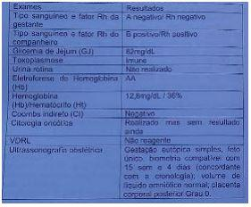

Questão 1 · Obstetrícia · Doença hemolítica perinatal DHPN · 4000184224Uma gestante de 9 semanas e 5 dias, datada pela última menstruação, procura atendimento por apresentar sangramento vaginal em pequena quantidade, há dois dias, associado à dor em região hipogástrica de intensidade moderada. Ao exame físico, sangue, em pequena quantidade, coletado em fundo de saco vaginal, sem sangramento ativo, dor intensa no toque vaginal, com colo impérvio. Abdome plano, ácido, dor à palpação de fossa ilíaca direita. Os sinais vitais são: PA: 100x60 mmHg, FC 80 bpm, stO₂ 98%. Tendo em vista esse caso clínico e os conhecimentos médicos correlatos, julgue o item a seguir. Caso a paciente tenha fator RH negativo, é necessário prescrever a imunoglobulina anti-RH.
A Certo.
B Errado.
Questão 2 · Obstetrícia · Doença hemolítica perinatal DHPN · 4000182806Paciente no 3º trimestre de gestação, Rh-isoimunizada, realizou ultrassonogra a obstétrica com Doppler. Que parâmetro ultrassonográfico, dentre os abaixo, deve ser considerado para avaliar anemia fetal?
A Relação sístole/diástole das artérias uterinas
B Índice de pulsatilidade da artéria umbilical
C Pico de velocidade sistólica da artéria cerebral média
D Índice de resistência do ducto venoso
Questão 3 · Obstetrícia · Doença hemolítica perinatal DHPN · 4000181837Leia o caso clínico. Gestante com 34 semanas e 4 dias, isoimunizada, apresenta doppler uxometria com PVS-ACM (Velocidade do Pico Sistólico da Artéria Cerebral Média) > que 1,5 múltiplo de mediana. Nessa situação, a conduta indicada é a realização de
A cordocentese e transfusão sanguínea fetal.
B corticoterapia e interrupção da gestação.
C interrupção imediata da gestação.
D realização de cardiotocografia fetal.
Questão 4 · Obstetrícia · Doença hemolítica perinatal DHPN · 4000169976Paciente II gesta I para interna em trabalho de parto. Na internação da maternidade, fez o exame de tipagem sanguínea que revelou que a gestante é AB negativo e o teste de Coombs Indireto foi positivo, embora no início do pré-natal fosse negativo. Frente a esse resultado, é correto que:
A ela está sensibilizada e não há o que ser feito.
B se a gestante recebeu imunoglobulina anti Rh na gestação, saber em que idade gestacional foi feito, pois pode ser devido a isso que o resultado está positivo.
C mesmo que a gestante tivesse recebido Imunoglobulina anti-Rh, o Coombs indireto não poderia ser positivo, e sim o Coombs direto.
D essa gestante não poderia receber imunoglobulina anti-Rh, pois ela era Rh negativo.
E sendo AB negativo, se o marido fosse O positivo, não haveria necessidade de imunoglobulina, pois existe incompatibilidade ABO.
Questão 5 · Obstetrícia · Doença hemolítica perinatal DHPN · 4000169294A introdução da imunoglobulina anti-D diminuiu a incidência de Doença Hemolítica Perinatal. Durante a assistência pré-natal, a administração desse medicamento em gestantes Rh negativo poderá ser realizada no seguinte caso:
A Teste de Coombs indireto negativo em pacientes com gestação molar completa anterior.
B Teste de Coombs indireto positivo a partir da 12ª semana de gestação e repetir em torno da 32ª semana de gestação.
C Teste de Coombs indireto negativo após a ocorrência de sangramento por via vaginal em qualquer fase da gestação.
D Teste de Coombs indireto positivo mesmo se a paciente for submetida a laqueadura tubária, permitida nas leis brasileiras.
Questão 6 · Obstetrícia · Doença hemolítica perinatal DHPN · 4000164264Primigesta, 28 anos, O Rh negativo, triagem de anticorpos: negativo, recebeu imunoglobulina anti-D 300 mcg com 28 semanas. Evoluiu para parto vaginal sem intercorrências com 37 semanas. Exames no puerpério: Tipagem sanguínea da mãe: O Rh negativo. Triagem de anticorpo: positivo. Tipagem sanguínea do recém-nascido: O Rh positivo. Qual a melhor conduta?
A Prescrever imunoglobulina anti-D.
B Considerar diagnóstico de isoimunização Rh.
C Solicitar a titulação de anticorpos.
D Encaminhar ao hematologista.
Questão 7 · Prevenção · 4000147354Primigesta, 30 semanas, prénatal sem intercorrências, apresenta sangramento vaginal vermelho vivo em moderada quantidade, indolor. Refere que esse é o primeiro episódio de sangramento na gestação. Ao exame: PA 110/70 mmHg, AU 29 cm, BCF 140 bpm, DU ausente, MF presente, tônus uterino normal. Exame especular: moderada quantidade de sangue vermelho vivo coletado em fundo de saco, sem sangramento ativo no momento. Não realizado exame de toque. Solicitado ultrassonogra a que evidenciou placenta recobrindo todo o orifício interno do colo uterino. Observado nas anotações do cartão de pré-natal que a gestante é O RhD negativo, tendo recebido imunoglobulina anti-D com 28 semanas de gestação. Diante disso, qual é a conduta mais adequada?
A Fazer imunoglobulina anti-D para evitar aloimunização materna devido ao sangramento causado pela placenta prévia, uma vez que a gestante é Rh negativo.
B Solicitar coombs indireto. Se esse vier positivo, significa que a gestante já foi aloimunizada e deve fazer dopplervelocimetria da artéria cerebral média para avaliar anemia fetal.
C Solicitar coombs indireto. Se esse vier negativo, a gestante precisa receber imunoglobulina anti-D.
D Solicitar coombs indireto. Se esse vier positivo, a gestante precisa receber imunoglobulina anti-D.
E Como a gestante recebeu imunoglobulina anti-D com 28 semanas, não há necessidade de solicitar coombs indireto e nem fazer imunoglobulina anti-D nesse momento.
Questão 8 · Prevenção · 4000147049Assinale a alternativa que tem orientação do uso de imunoglobulina anti-D na profilaxia da aloimunização.
A Mulher Rh negativo, com teste de Coombs indireto negativo.
B Mulher Rh negativo, com teste de Coombs indireto positivo.
C Mulher Rh positivo, com teste de Coombs indireto negativo.
D Mulher Rh positivo, com teste de Coombs indireto positivo.
E Parceiro Rh negativo ou com tipagem indeterminada.
Questão 9 · Obstetrícia · Diagnóstico · 4000146117Algumas características do líquido amniótico podem expressar comprometimento fetal. Em gestações complicadas por doença hemolítica perinatal, o líquido amniótico pode se expressar tomando a característica
A esverdeado
B achocolatado
C amarelo citrino.
D com sangue vermelho vivo.
Questão 10 · Obstetrícia · Prevenção · 4000143226Paciente de 25 anos, GIIP0AI (gestação anembrionada), encontra-se na 11ª semana de gestação, tendo recebido resultado de tipagem sanguínea B, Rh negativo, Coombs indireto 1/4, às custas de anti D. A avaliação adicional identi cou parceiro Rh positivo. Diante desse quadro, a conduta a ser adotada é realizar:
A dopplerfluxometria de artéria cerebral média
B espectofotometria de líquido amniótico
C imunoglobulina anti D na 28ª semana
D dosagem seriada de Coombs indireto
Questão 11 · Obstetrícia · Prevenção · 4000142507Puérpera de 37 anos, G3 P3 C0 A0, primeiro dia pós-parto normal, sem intercorrências. Durante a visita, ela lhe questiona se não vai tomar a “vacina” em virtude do seu tipo de sangue, pois nos dois partos prévios ela tomou a tal “medicação”. Os exames de pré-natal e da internação disponíveis foram: Tipagem sanguínea ABO: “B”; Fator Rh: negativo; Coombs indireto: negativo. Recém-nascido: Tipagem sanguínea ABO: “O”; Fator Rh: negativo; Coombs direto: negativo. Sua resposta para essa puérpera foi:
A Sim, você vai receber uma dose da imunoglobulina anti-D em virtude da incompatibilidade Rh do seu sangue e do seu filho.
B Não, você não vai receber uma dose da Imunoglobulina anti-D porque já é isoimunizada.
C Sim, você vai receber uma dose da Imunoglobulina anti-D porque já é isoimunizada.
D Não, você não precisa receber uma dose da imunoglobulina anti-D, porque não existe incompatibilidade Rh.
E Não, você não precisa receber uma dose da imunoglobulina anti-D, porque não existe incompatibilidade ABO.
Questão 12 · Obstetrícia · Prevenção · 4000142009Primigesta, 26 semanas, Rh negativo, com diagnóstico de placenta prévia, foi a maternidade com sangramento vaginal abundante. Informa que o marido é Rh positivo homozigoto. Qual o acompanhamento da gestante:
A Solicitar coombs indireto e, se positivo, administrar imunoglobulina.
B Administrar imunoglobulina na 28a semana e no pós parto.
C Administrar imunoglobulina no momento do sangramento a na 28 a semana.
D Administrar imunoglobulina anti D e repetir a cada 12 semanas até o parto.
Questão 13 · Doença hemolítica perinatal DHPN · 4000141540Qual é o teste que identifica a presença e o volume de eritrócitos fetais no sangue materno?
A Relação lecitina/esfingomielina.
B Coombs direto ou indireto.
C Kleihauer-Betke.
D Clements.
E Azul definilo a 0,1%.
Questão 14 · Doença hemolítica perinatal DHPN · 4000141382A amniocentese é um método de diagnóstico pré-natal que consiste na aspiração transabdominal de uma pequena quantidade de uido amniótico da bolsa amniótica que envolve o feto. Pode ser usada para acompanhar a anemia fetal. Os critérios para definição da anemia fetal foram determinados pelo estudo espectrofotométrico do líquido amniótico (denominado curva de Liley). De acordo com o enunciado, é CORRETO afirmar:
A Na zona 1, o feto é levemente afetado.
B Na zona 2, o feto não é afetado ou apenas levemente afetado.
C A curva de Liley possui quatro zonas prognósticas.
D Na zona 1, o feto provavelmente está anêmico.
Questão 15 · Obstetrícia · Prevenção · 4000141166Mulher, 33a, G3P2A1, em alojamento conjunto com 24h de puerpério, tipo sanguíneo A e Rh negativo, com Coombs indireto positivo anti-D (coletados na admissão hospitalar para o parto). Recém-nascido (RN): tipo sanguíneo O e Rh positivo. Antecedente pessoal: Imunoglobulina anti-Rh após o primeiro parto, após o aborto e às 28 semanas desta gestação. A CONDUTA É:
A Contra indicar nova gestação, pois paciente isoimunizada.
B Solicitar Coombs direto para orientar uso de Imunoglobulina anti-Rh.
C Imunoglobulina anti-Rh não indicada por Coombs indireto positivo.
D Prescrever Imunoglobulina anti-Rh, por RN Rh positivo.
Questão 16 · Tratamento · Obstetrícia · 4000131003Paciente de 33 anos, G4P2A1, com 31 semanas de gestação, apresenta Coombs indireto em titulação 1/32 (anti-D). Trata-se de uma paciente com tipo sanguíneo O negativo. Foi solicitado o Doppler de artéria cerebral média, que evidenciou velocidade máxima de 1,65 múltiplos da mediana. A conduta subsequente deverá ser:
A Imunoglobulina anti Rh-D
B Espectrofotometria do líquido amniótico
C Cordocentese
D Acompanhar e repetir o Doppler de artéria cerebral
E Corticoterapia e antecipação do parto
Questão 17 · Obstetrícia · Diagnóstico · 4000142323Paciente gestante com 16 semanas de idade gestacional, G1P0A0, chega em seu primeiro retorno ao Pré-Natal mostrando exame de tipagem sanguínea com sangue A Rh Neg e variante DU positivo. Nesse caso, como rotina de acompanhamento, a conduta indicada é:
A Teste de Coombs indireto semanal e aplicar Imunoglobulina Anti-Rh com 28 semanas.
B Teste de Coombs indireto e imunoglobulina não necessários.
C Teste de Coombs indireto mensal e aplicar Imunoglobulina Anti-Rh com 28 semanas.
D Teste de Coombs indireto mensal, aplicação de Imunoglobulina Anti-Rh não é necessária.
Questão 18 · Acompanhamento neonatal · Obstetrícia · Prevenção · 4000127702No primeiro retorno de consulta pré-natal, sua paciente, primigesta com 12 semanas de gestação, sem intercorrências até o momento, traz os resultados dos exames. Um deles mostra que ela é Rh negativo. Foi solicitado também teste de Coombs Indireto, cujo resultado foi negativo. A conduta adequada para esta paciente é:
A Realizar dopplervelocimetria quinzenalmente para detecção precoce de anemia fetal
B Após o nascimento do concepto, se o teste de Coombs Indireto for positivo, administrar imunoglobulina anti-D em até 72 horas após o parto
C Repetir o teste de Coombs Indireto na 28ª semana de gestação e, se continuar negativo, fazer profilaxia antenatal com a imunoglobulina anti-D
D Realizar exame ultrassonográfico mensal para verificar se existe a presença de hidrópsia fetal
Questão 19 · Doença hemolítica perinatal DHPN · 4000124344Frente aos desa os da Doença Hemolítica perinatal ou Isoimunizacão materna pelo fator Rh, as principais di culdades englobam o seguimento e diagnóstico do comprometimento fetal. Dentre os achados abaixo, qual se associa fortemente à anemia fetal grave:
A Dopplerfluxometria da artéria cerebral média alterada, com decréscimo significativo da velocidade sistólica.
B Hidropsia fetal.
C Restrição de crescimento intrauterino fetal.
D Insuficiência tricúspide cardíaca fetal.
E Defeitos estruturais cardíacos.
Questão 20 · Diagnóstico · 4000114979Assinale a alternativa correta quanto à doença hemolítica perinatal (DHPN).
A As gestantes aloimunizadas, com teste de Coombs Indireto (pesquisa de anticorposantieritrocitários) positivo com titulação superior ou igual a 1:8, devem realizar amniocenteses seriadas e análises espectrofotométricas do líquido amniótico, para o diagnóstico e acompanhamento de anemia fetal.
B A condição para a aplicação da imunoglobulina anti-D na profilaxia da aloimunizaçãoRhD na gravidez é que a gestante seja Rh negativa, possua teste de Coombs Indireto (pesquisa de anticorpos antieritrocitários) positivo e o marido seja Rh positivo ou tenha tipagem indeterminada.
C A medida do pico de velocidade sistólica (PVS) da artéria cerebral média (ACM) do fetopela dopplerfluxometria é um método não invasivo, seguro e eficaz no diagnóstico e acompanhamento da anemia fetal de gestantes sensibilizadas.
D A velocidade máxima do ducto venoso (DV) na dopplerfluxometria, por apresentarcorrelação direta com níveis de hematócrito e hemoglobina, é utilizada como parâmetro não invasivo para predizer anemia fetal em gestantes aloimunizadas.
E Os fetos anêmicos de gestantes sensibilizadas apresentam diminuição do débitocardíaco e estado hipodinâmico na dopplerfluxometria evidenciado pela diminuição nas velocidades de fluxo em alguns vasos como artéria esplênica (AE) e artéria cerebral média (ACM).
Questão 21 · Doença hemolítica perinatal DHPN · 4000107640Na assistência a uma mulher Rh negativo, é correto afirmar que
A no pré-natal ela deverá receber imunoglobulina anti-Rh no primeiro trimestre e com 28 semanas.
B a pesquisa de eventual sensibilização deve ser feita com dopplervelocimetria da artéria cerebral média.
C se existir incompatibilidade ABO, a presença dos anti- corpos naturais na gestante irá protegê-la da sensibilização pela eventual passagem de hemácias Rh positivas do feto.
D no pós-parto, a administração de imunoglobulina anti-Rh somente deverá ser feita nos casos de recém-nascidos que sejam Rh positivo e que apre- sentem o teste de Coombs direto negativo.
E se ela já teve recém-nascido Rh negativo em gestação anterior, do mesmo casamento, não existe necessidade de nenhuma investigação nas demais gestações.
Questão 22 · Doença hemolítica perinatal DHPN · 4000106118Em gestações complicadas por isoimunização Rh, a conduta ativa está indicada quando os títulos de coombs indireto estiverem acima de:
A 1/2
B 1/4
C 1/8
D 1/16
Questão 23 · Antecedentes obstétricos · Doença hemolítica perinatal DHPN · 4000103706Primigesta, com idade gestacional de 9 semanas, com tipagem sanguínea O negativo, inicia pré-natal na UBS de seu bairro. Nessa situação, o médico que a acompanha deve questionar a tipagem do marido e:
A Caso ele seja negativo, solicitar teste e coombs direto mensalmente.
B Caso ele seja negativo, solicitar teste e coombs indireto mensalmente.
C Caso ele seja positivo, solicitar teste e coombs indireto mensalmente.
D Caso ele seja positivo, solicitar teste e coombs direto mensalmente.
Questão 24 · Doença hemolítica perinatal DHPN · 4000102594Assinale a alternativa correta com relação ao seguimento e à conduta frente à gestante com Rh negativo.
A Todas gestantes devem receber imunoglobulina anti-Rh com 28 semanas.
B O seguimento deve ser mensal com teste de Coombs e, nos casos em que o título for igual ou superior a 1/16, deverão pesquisar anemia fetal com doppler da artéria cerebral média.
C Nos casos em que ocorrer sangramento ou procedimentos invasivos tipo amniocentese genética, a gestante deverá, ao fazer Coombs indireto e se persistir negativo, aguardar as 28 semanas para profilaxia.
D No pós-parto, a profilaxia se indica nos casos de RN com Rh positivo e Coombs indireto negativo, ou no caso de RN com Rh negativo.
Questão 25 · Tratamento · 4000076664G5 P2 A2, 26ª semana de gestação, gestante, Rh negativo, sensibilizada com título de anticorpos irregulares de 1/512. Ao exame ultrassonográfico, evidencia-se hidropsia fetal. Qual a conduta mais adequada?
A Internação e resolução por cesária.
B Amniocentese para realização do teste Kleihauer-Betke.
C Repouso e repetição da pesquisa de anticorpos em sete dias.
D Cordocentese para averiguar Hb fetal e transfusão intra-uterina.
E Aguardar o parto e realizar exanguineotransfusão no RN.
Questão 26 · Doença hemolítica perinatal DHPN · 4000065880A doença Hemolítica Perinatal (DHPN) é provocada por alo ou isoimunização a vários antígenos eritrocitários fetais. É CORRETO afirmar que:
A As hemácias fetais atingem a circulação da gestante, apenas, no momento do parto.
B A igm anti-rh materna atravessa a barreira placentária e destrói as hemácias fetais, criando a dhpn.
C No feto anêmico com mais de 34 semanas de gestação, devemos indicar a transfusão intrauterina por cordocentese.
D Coombs direto positivo 24 horas, após uso de imunoglobulina anti-rh, indica que houve sensibilização por ocasião do parto.
E A anemia fetal pode ser observada pela ultrassonografia ao detectarmos uma placenta com calcificações.
Questão 27 · Diagnóstico · 4000046439No diagnóstico de aloimunização Rh, a amninocentese com espectofotometria do líquido amniótico foi substituída pelo seguinte parâmetro:
A Velocidade sistólica máxima da artéria cerebral média.
B Índice de pulsatilidade da aorta.
C Relação A/B do ducto venoso.
D Índice de resistência da artéria umbilical.
Questão 28 · Tratamento · Diagnóstico · 4000038457A detecção de Coombs indireto positivo em gestante Rh positivo, pode indicar
A sensibilização ABO.
B sensibilização pelo C ou pelo E do sistema Rh.
C ausência de sensibilização.
D ausência de sensibilização e obrigatoriedade da administração de imunoglobulina anti-D.
E sensibilização causada pelo teste de Coombs.
Questão 29 · Doença hemolítica perinatal DHPN · 4000033681Gestante de 23 anos, primigesta, Ig: 9 semanas, realizou os primeiros exames laboratoriais do pré-natal sem anormalidades. Sua tipagem sanguínea é A negativo. Sobre a doença hemolítica perinatal podemos afirmar:
A Se parceiro Rh positivo, devemos realizar imunoglobulina anti- D nas seguintes situações: procedimentos invasivos, gestação molar, gestação ectópica, abortamento.
B Ocorre quando a mãe é Rh positivo e o feto Rh negativo.
C Devemos realizar a imunoglobulina anti-D para todas as pacientes no pós-parto, de preferência nas primeiras 72 horas.
D Não há necessidade de vigilância fetal durante o pré-natal, já que as complicações ocorrem somente após o nascimento.
E Não devemos, para essa paciente, nos preocuparmos com doença hemolítica peri-natal, visto que só teremos informações possíveis para detecção da doença a partir da 24ª semana.
Questão 30 · Prevenção · 4000031042A doença hemolítica perinatal é importante causa de mortalidade fetal e neonatal e a principal causa é incompatibilidade do grupo sanguíneo Rh-antígeno D. São situações clínicas onde indicamos a profilaxia anti Rh:
A Puérpera com tipagem sanguínea A negativa, parceiro desconhecido e recém-nascido com tipagem sanguínea B negativa.
B Esvaziamento uterino por AMIU em gestante com tipagem sanguínea B positivo e parceiro com tipagem sanguínea A negativo.
C Abortamento em gestante com tipagem sanguínea A negativa e parceiro não identificado.
D Puérpera com tipagem sanguínea O negativa e Coombs indireto positivo, parceiro A positivo e recém-nascido com tipagem sanguínea A positiva.
Questão 31 · Tratamento · Diagnóstico · 4000028808Paciente gestante Rh negativa, GIV PNII AI, IG de 24 semanas, apresentou teste de coombs indireto positivo 1:32. Esposo apresenta Rh positivo. A paciente não se lembra de ter feito pro laxia nas outras gestações e refere gestações anteriores sem intercorrências. A conduta mais apropriada nessa gestação é:
A repetir o coombs no último trimestre.
B tranquilizar a paciente e orientar que pode ser um falso positivo devido a gestações anteriores.
C realizar a imunoglobulina anti Rh e indicar cordocentese para transfusão fetal.
D iniciar o rastreio com o doppler da artéria cerebral média e considerar valor alterado se VS max> 1,5 MoM.
Questão 32 · Tratamento · Diagnóstico · 4000024103Dentre os procedimentos a seguir, qual a técnica não invasiva mais indicada para predição do grau de anemia fetal?
A Gráfico de Liley.
B Coombs indireto.
C Pico sistólico da velocidade da artéria cerebral média.
D Perfil biofísico fetal.
E Medida do tecido celular subcutâneo e grau de ascite.
Questão 33 · Prevenção · 4000022004Situação que representa mínimo risco de Isoimunização materno fetal:
A rotura prematura de membranas.
B gravidez ectópica rota.
C remoção manual de placenta no parto.
D placenta prévia centro-total.
Questão 34 · Doença hemolítica perinatal DHPN · 4000020145Antigamente conhecida como Doença de Rhesus, ou Eritroblastose fetal, hoje mais comumente denominada de Doença Hemolítica Perinatal, ocorre quando os anticorpos maternos atravessam a barreira placentária e ligam-se a antígenos presentes nas células sanguíneas fetais, causando hemólise prematura dessas células. Considerando a gravidade da doença e a necessidade de intervenção analise as alternativas abaixo e assinale a INCORRETA:
A no caso de morte intrauterina, se o feto era Rh positivo, independentemente da idade gestacional, a administração da imunoglobulina anti-D deve ser feita imediatamente após o parto.
B somente os anticorpos IgG são capazes de provocar a Doença hemolítica perinatal (DHPH), pois eles atravessam a placenta.
C mulheres RhD negativas, em primeira gestação, ao gerarem conceptos RhD positivos, podem desenvolver a DHPH já nessa gestação.
D a sensibilização materna está envolvida no processo de desenvolvimento da DHPN pelos números de abortos e gestações anteriores, além de transfusões prévias e permeabilidade placentária.
E a imunoglobulina anti-D promove proteção de 98 a 99% quando administrada nas 72 horas seguintes do parto.
Questão 35 · Tratamento · Diagnóstico · 4000019853O exame ultrassonográ co que substitui a amniocentese na avaliação de fetos comprometidos por isoimunização Rh durante a gravidez é o doppler:
A de artérias uterinas.
B de artéria umbilical.
C de velocidade sistólica máxima de artéria cerebral média.
D de Ducto venoso fetal.
Revisar: possível letra faltando em enunciado
Questão 36 · Prevenção · Diagnóstico · 4000010827Situação que representa mínimo risco de Isoimunização materno fetal:
A rotura prematura de membranas.
B gravidez ectópica rota.
C remoção manual de placenta no parto.
D placenta prévia centro-total.
Questão 37 · Tratamento · Doença hemolítica perinatal DHPN · Diagnóstico · 4000010137Em relação à Doença Hemolítica Peri-natal, assinale a alternativa INCORRETA:
A A hidropsia fetal é facilmente diagnosticada pelo ultrassom, mas é sinal tardio da doença.
B Os anticorpos que se encontram na fração IgG atravessam facilmente a placenta.
C O teste de Coombs indireto avalia a quantidade de anticorpos anti-ABO no sangue materno.
D Estando o Coombs indireto acima de 1/8, inicia-se a investigação com Doppler de Artéria Cerebral Média fetal.
Questão 38 · Diagnóstico · 4000001573A análise de líquido amniótico para diagnóstico de comprometimento fetal por anticorpos anti-Rh leva em consideração a dosagem de:
A Relação Lecitina/esfingomielina.
B Fosfatidilglicerol.
C Bilirrubina.
D Alfa-fetoproteína.
Questão 39 · Doença hemolítica perinatal DHPN · 4000125615A Doença Hemolítica perinatal apresenta elevados índices de morbidade e mortalidade fetal e perinatal. Dentre os achados abaixo, qual NÃO se associa com essa patologia:
A prematuridade.
B ascite fetal.
C placentomegalia.
D Síndrome de regressão caudal.
E insuficiência cardíaca fetal.
Questão 40 · Prevenção · 4000117703Em relação a doença hemolítica perinatal, em gestantes Rh-negativo não sensibilizadas, com grupo sanguíneo fetal desconhecido ou Rh positivo, administra-se IgG anti-D com quantas semanas de gestação?
A 32 semanas.
B 30 semanas.
C 24 semanas.
D 28 semanas.
E 26 semanas.
Questão 41 · Prevenção · Diagnóstico · 4000115847Primigesta com 16 semanas retorna ao pré-natal com resultado de tipagem sanguínea solicitada: grupo sanguíneo O e RH negativo. O pai da criança pertence ao grupo A positivo. Qual deve ser a conduta na presente consulta?
A Solicitar o teste de Coombs indireto.
B Solicitar o teste de Coombs direto.
C Repetir o exame de tipagem sanguínea do pai.
D Repetir o exame de tipagem sanguínea da gestante.
E Iniciar imediatamente a imunoglobulina Anti RH.
Questão 42 · Diagnóstico · 4000101022Gestante de 24 anos, secundigesta, primípara, 28 semanas de idade gestacional, veio encaminhada do Programa Saúde da Família para o Pré-Natal de Alto Risco (PNAR), com exame de Coombs Indireto (CI) 1/32. Qual a sua orientação?
A Realizar ultrassonografia com medida de velocidade média no pico sistólica dodoppler da artéria cerebral média, para pesquisa de anemia fetal.
B Continuar o pré-natal de baixo risco, pois o Coombs Indireto positivo deve-se àimuniglobulina.
C Realizar ultrassonografia morfológica para avaliar possíveis repercussões fetais deanemia.
D Continuar o pré-natal de alto risco devido ao risco de isoimunização.
Questão 43 · Prevenção · 4000080939S. tem 24 anos, está no curso da 28ª semana de gestação e não realizo upré-natal. É a sua primeira gestação. Por apresentar sangramento vaginal de moderada intensidade, procura a maternidade. O obstetra de plantão faz a ausculta fetal que revela 146 bpm. A ultrassonogra a não evidencia hidropsia fetal nem placenta prévia. O exame do sangue de Solange revela ser do tipo B fator Rh negativo, e ela não sabe quem é o pai da criança.Nesse caso,qual a melhor conduta a ser realizada?
A Solicitar teste de Coombs direto.
B Solicitar teste de Coombs direto e indireto.
C Solicitar teste de Kleihauer-Betke e, em caso de resultado negativo, aplicar imunoglobulina anti-Rh.
D Solicitar teste de Coombs indireto e, se o resultado for negativo, aplicar imunoglobulina anti-Rh na gestante.
Questão 44 · Fisiopatologia · 4000078938Gestante de 30 anos, gesta III, para I, aborto I, com idade gestacional de 27 semanas, acompanhada no pré-natal por isoimunização Rh, apresenta, ao exame obstétrico, altura uterina de 33 cm e resultado de ultrassonogra a mostrando ascite e derrame pericárdico fetais. Outra alteração encontrada como parte do quadro descrito é
A edema subcutâneo.
B hidrocefalia fetal.
C oligoâmnio severo.
D hidronefrose fetal.
Questão 45 · Diagnóstico · 4000073206G5 P2 A2, 26 semanas, Rh negativo sensibilizada com título de anticorpos irregulares de 1/512. Ao exame ultrassonográ co, evidencia-se hidropsia fetal. Qual a conduta mais adequada?
A Internação e resolução da gestação por cesária.
B Amniocentese para realização do teste Kleihauer-Betke.
C Cordocentese para averiguar anemia fetal e transfusão intra-uterina.
D Repouso e repetição da pesquisa de anticorpos em 7 dias.
E Amnioscopia para verificar a cor do líquido amniótico.
Revisar: possível letra faltando em enunciado
Questão 46 · Diagnóstico · 4000072019Paciente com 44 anos, G3P1A1, 22 semanas de gestação, tipo sanguíneo AB negativo e Coombs indireto com título de 1/32 (anti-D). Qual a conduta mais adequada?
A Imunoglobulina anti-Rh D
B Amniocentese
C Doppler da artéria cerebral
D Cordocentese para tipagem sanguínea fetal
E Espectofotometria do líquido amniótico
Questão 47 · Doença hemolítica perinatal DHPN · 4000062936A Doença Hemolítica Perinatal (DHPN) é provocada por alo ou isoimunização a vários antígenos eritrocitários fetais. É CORRETO afirmar que:
A As hemácias fetais atigem a circulação da gestante, apenas, no momento do parto.
B A IgM anti-Rh materna atravessa a barreira placentária e destrói as hemácias fetais, criando a DHPN.
C No feto anêmico com mais de 34 semanas de gestação, devemos indicar transfusão intrauterina por cordocentese.
D Coombs indireto positivo 24 horas, após uso de imunoglobulina anti-Rh, indica que houve sensibilização por ocasião do parto.
E A anemia fetal pode ser observada pelo ultrassom ao detectarmos uma placenta pequena.
Questão 48 · Acompanhamento neonatal · Tratamento · Prevenção · 4000060968Em relação à Doença Hemolítica Perinatal (DHPN), atribua V (Verdadeiro) ou F (Falso) às afirmativas a seguir. ( ) Três anticorpos determinam a doença hemolítica perinatal grave: anti-D, anti-C e anti-Kell. ( ) Na gravidez, a incompatibilidade pelo sistema Rh poucas vezes acomete o primeiro lho, exceto se houver referência à hemotransfusão sem o conhecimento prévio do fator Rh. ( ) A hidropsia fetal geralmente ocorre quando a hemoglobina fetal é < 7 g/dl ou o hematócrito < 20%. ( ) Na aloimunização materna, os anticorpos anti-Rh são identi cados por meio do teste de Coombs direto no período pré- natal. ( ) Valores da velocidade sistólica máxima do Doppler da artéria cerebral média abaixo de 1,5 múltiplo da mediana são indicativos de anemia fetal. Assinale a alternativa que contém, de cima para baixo, a sequência CORRETA.
A V, V, V, F, F.
B V, V, F, F, V.
C V, F, F, V, F.
D F, V, F, F, V.
E F, F, V, V, V.
Questão 49 · Tratamento · Diagnóstico · 4000045484Tercigesta, 28 anos de idade, com 19 semanas de idade gestacional, apresentando exame de coombs indireto com título=1:32 tipagem sanguínea=O negativo. Considerando o diagnóstico diante deste quadro assinale a melhor opção para o controle da anemia fetal.
A Medida do pico de velocidade sistólica na dopplervelocimetria da artéria cerebral média.
B Dosagem de anticorpos anti-Rh no capilar fetal.
C Medida da circunferência cefálica na ultrassonografia obstétrica.
D Medida da translucência nucal na ultrassonografia.
E Hemograma materno.
Questão 50 · Artéria cerebral média ACM · Acompanhamento neonatal · Obstetrícia · 4000040971Tercigesta, 28 anos de idade, com 19 semanas de idade gestacional, apresentando exame de coombs indireto com título=1:32 tipagem sanguínea=O negativo. Considerando o diagnóstico diante deste quadro assinale a melhor opção para o controle da anemia fetal.
A Medida do pico de velocidade sistólica na dopplervelocimetria da artéria cerebral média.
B Dosagem de anticorpos anti-Rh no capilar fetal.
C Medida da circunferência cefálica na ultrassonografia obstétrica.
D Medida da translucência nucal na ultrassonografia.
E Hemograma materno.
Questão 51 · Diagnóstico · 4000038765Parâmetro utilizado para o diagnóstico precoce de anemia fetal:
A Índice de resistência.
B Relação A/B.
C Índice de pulsatilidade.
D Velocidade sistólica máxima.
Questão 52 · Tratamento · Diagnóstico · 4000037458Na detecção de Coombs indireto positivo em gestante, durante o pré-natal, deve-se
A pesquisar Coombs direto.
B buscar a identificação do anticorpo detectado.
C realizar pesquisa de avidez de lgG.
D administrar imunoglobulina anti-D (ex. Matergan).
E realizar estudo dopplervelocimétrico do ducto venoso fetal.
Questão 53 · Tratamento · Diagnóstico · 4000035495Paciente de 22 anos, G1P0A0, com 32 semanas de gestação, é Rh negativo e seu marido tem tipo sanguíneo B positivo, A Médica de Família e Comunidade, qual a acompanha, vem solicitando testes seriados de coombs indireto e o último resultado, o qual a paciente traz na consulta de hoje, mostrou-se positivo. A conduta para este caso é:
A Solicitar novo coombs indireto para descartar falso positivo.
B Manter solicitação de coombs indireto mensalmente até o parto.
C Orientar quanto a prescrição de imunoglobulina anti-D no pós-parto imediato.
D Encaminhar para o pré-natal de alto risco.
Questão 54 · Ameaça de abortamento · Prevenção · 4000034200Gestante, 26 anos, G3P2A0, 16 semanas de amenorreia comparece ao pré-natal com os exames descritos no quadro abaixo e com queixa de sangramento vaginal em pequena quantidade iniciado hoje. Sem dados relevantes na história familiar e pessoal. Refere ter recebido imunoglobulina anti-Rh após os dois partos anteriores. Nos exames clínicos e obstétrico, chama atenção a presença de sangramento proveniente do orifício do colo do uterino. Diante desse caso, assinale a conduta MAIS ADEQUADA:

A Encaminhar a gestante à maternidade de referência para receber imunoglobulina anti- Rh.
B Solicitar teste de Coombs indireto e retorno com o resultado do exame.
C Solicitar ultrassonografia para pesquisa de anemia fetal.
D Tranquilizar a gestante pelo sangramento autolimitado e BCF positivo.
Questão 55 · Doença hemolítica perinatal DHPN · 4000029789Em relação a aloimunização materno-fetal, seguem as afirmativas. I- Apesar das recomendações existentes em relação à pro laxia com imunoglobina anti-D serem divulgadas e conhecidas, a aloimunização materno-fetal ainda afeta cerca de cinco a cada 1.000 gestações. II- Embora a principal causa seja falha na administração da imunoglobina, alguns casos ocorrem por dosagem inadequada, uso de drogas endovenosas e transfusões de sangue. III - Ao redor de 98% dos casos são devidos a antígeno D do fator Rh e 2% a antígenos atipicos como Kell, E ou C. Segundo o do Manual Técnico e gestação de Alto Risco do Ministério da Saúde, está CORRETO o que se afirma em:
A I, apenas.
B II e III, apenas.
C I, II e III.
D II, apenas.
E III, apenas.
Questão 56 · Doença hemolítica perinatal DHPN · 4000025458Doença Hemolítica Perinatal DHPN é decorrente da incompatibilidade sanguínea materno-fetal. Nesse caso, o concepto apresenta fator hemático de herança paterna, ausente no organismo da gestante e capaz de imunizá-la, produzindo anticorpos específicos ao referido fator. Sobre a DHPN verifica-se o seguinte:
A os anticorpos que se encontram na fração IgG e IgM atravessam a placenta chegando ao feto.
B a incompatibilidade ABO tem menor frequência do que a incompatibilidade Rh.
C o Dopller da ACM com valores de velocidade sistólica máxima (VSmáx) acima de 1,5 múltiplo da mediana (MoM) são indicativos de anemia fetal.
D a espectrofotométrica da bilirrubina por não ser um método invasivo constitui o método de escolha para diagnosticar a anemia fetal.
Questão 57 · Doença hemolítica perinatal DHPN · 4000125866Sobre a Isoimunização Rh:
A Pode acontecer em mães Rh+ e RNs Rh-.
B Pode acontecer em mães Rh -e RNs Rh-.
C Pode acontecer em mães Rh- e filhos procedentes de pai Rh+.
D Pode acontecer em mães Rh - e filhos procedentes de pai Rh-.
E Patologia obstétrica debelada no século IX quando desvendada sua fisiopatologia e implementada uma vacinação em massa das mulheres em idade fértil.
Questão 58 · Prevenção · 4000121938Quanto à Doença Hemolítica Perinatal (DHPN), é CORRETO afirmar que:
A Aproximadamente 70% dos casos de aloimunização são devidos à incompatibilidade ABO e Rh. Antígenos eritrocitários atípicos como o Kell, o Duff e outros contribuem para os 30% restantes da patologia fetal.
B Nas gestações em que PAI (Pesquisa de Anticorpos Irregulares) é negativa, realiza-se seguimento para investigação de anemia fetal de acordo com o tipo de anticorpo presente e o risco de ocorrência de Doença Hemolítica Perinatal (DHPN).
C A aloimunização RhD é a única causa de Doença Hemolítica Perinatal (DHPN) e sua profilaxia pode ser realizada com aplicação de imunoglobulina anti-D.
D Após exposição primária aos antígenos eritrocitários desconhecidos, ocorre sensibilização por meio da produção inicial de Imunoglobulina M (IgM) que atravessa a barreira placentária.
E Após a administração da imunoglobulina anti-D, algumas gestantes podem passar a apresentar anticorpos anti-D em baixos títulos na Pesquisa de Anticorpos Irregulares (PAI).
Questão 59 · O sistema eritrocitário · 4000118428Em consulta pré-natal de rotina de uma secundigesta, nulípara, observa-se tipagem materna O Rh+, com teste de Coombs indireto positivo. A orientação feita pelo médico deve ser que:
A O feto deve receber transfusão sanguínea intrauterina se o nível de anticorpos for superior a 1:16.
B A paciente deve ter sido sensibilizada pelo fator Rh na primeira gestação.
C Possivelmente existam anticorpos antieritrocitários não Rh.
D Deve-se ministrar imunoglobulina anti-Rh durante a gestação e no puerpério, somente se o recém-nascido for Rh positivo.
Questão 60 · Prevenção · 4000110383Gestante de 26 anos, G2AL, com 20 semanas de gestação, inicia pré natal tardio, Traz tipagem sanguínea O negativo e refere que seu parceiro é Rh positivo. Solicitado pesquisa de anticorpos irregulares (PAI) que veio positivo com identificação de anticorpo anti-Lewis A, classe IgM. Nesse caso, o mais adequado é:
A Acompanhar o feto com dopplerfluxometria de artérias cerebrais.
B Indicar transfusão fetal intra-útero .
C Realizar cordocentese.
D Realizar amniocentese.
E Repetir Coombs indireto com 28 semanas.
Questão 61 · Artéria cerebral média ACM · Diagnóstico · 4000109137Com relação ao fator Rh e gestação, é correto afirmar que
A a melhor forma de acompanhar uma gestante isoimunizada é com doppler da artéria cerebral média.
B a forma mais efetiva de identificar o grau de anemia fetal é acompanhar com Teste de Coombs Indireto seriado.
C nos casos de isoimunização, a melhor conduta cabível, atualmente, é a transfusão intravascular.
D quando indicada a transfusão intravascular em feto acometido pela isoimunização, a melhor opção é por sangue do grupo O Rh positivo.
E a profilaxia nos casos de gestantes Rh negativo é a administração de imunoglobulina anti-Rh até 72 horas após o parto em puérperas que deram à luz RN Rh positivo, sendo que as demais situações de profilaxias, sem conhecimento do Rh fetal não têm mais indicação.
Questão 62 · Prevenção · 4000104514A doença hemolítica perinatal por incompatibilidade Rh é uma doença passível de prevenção através da adequada utilização de imunoglobulina anti-D. Em paciente Rh-negativo, a utilização de imunoglobulina anti-D é indicada no(a):
A Pós-parto vaginal, feto Rh-negativo e Coombs indireto negativo.
B Pós-cesariana, feto Rh-positivo e Coombs indireto positivo.
C Pós-gestação ectópica e parceiro Rh-positivo.
D Pós-amniocentese e parceiro Rh-negativo.
Questão 63 · Doença hemolítica perinatal DHPN · 4000103165Na gestante isoimunizada com Coombs indireto 1/64, idade gestacional 26 semanas, realiza-se a detecção da anemia fetal pela medida da velocidade máxima na sístole ventricular da artéria cerebral média que no feto anêmico estará:
A Igual a zero.
B Aumentada.
C Diminuída.
D Reversa.
Questão 64 · Prevenção · 4000100017Mulher, 32a, G3P2A0C0, idade gestacional de 23 semanas é encaminhada para o ambulatório de gravidez de alto risco por ser Rh negativa e apresentar prova de Coombs Indireto positivo com identificação de anticorpo anti-Lewis A, classe IgM. O pai da criança é Rh positivo, com fenotipagem de heterozigoto para o sistema Rh. Refere não ter recebido imunoglobulina anti-D profilática após o último parto. A conduta é:
A Realizar estudo de dopplerfluxometria de artérias cerebrais fetais e, se alterado, indicar investigação de anemia fetal.
B Indicar cordocentese, já que há 50% de chance do feto atual ser Rh negativo.
C Se persistir o mesmo resultado de Coombs indireto, há indicação de imunoglobulina anti-D no pós parto.
D Repetir a prova de Coombs indireto e indicar investigação de anemia fetal, apenas se houver titulação elevada de anticorpos.
Questão 65 · Diagnóstico · 4000099677Primigesta, 26 anos, Rh negativo, 34 semanas de gestação, pré-natal de risco habitual, desconhece o Rh e o paradeiro do parceiro. Traz um exame mostrando coombs indireto positivo e ultrassonogra a obstétrica com doppler colorido mostrando anemia fetal. Qual parâmetro da dopplerfluxometria da artéria cerebral média foi observado?
A Índice de resistência
B Índice de pulsatilidade
C Relação sístole-diástole
D Velocidade máxima da sístole
Questão 66 · Diagnóstico · 4000098274Gestante de nosso pré-natal apresenta títulos do teste de Coombs indireto cada vez mais elevados. A explicação mais provável para esta ocorrência é:
A Corioamnionite
B Acretização placentária
C Doença hemolítica perinatal
D Malformação fetal
Questão 67 · Prevenção · 4000082182Primigesta, 26 anos, Rh-negativo, no curso da 28ª semana de gestação, apresenta metrorragia de regular intensidade. À ultrassonografia, observa-se feto vivo, sem hidropsia e placenta prévia oclusiva parcial. A paciente não realizou pré-natal e desconhece o Rh e o paradeiro do parceiro. A melhor conduta no caso é fazer:
A Teste de Coombs direto.
B Teste de Kleihauer-Betke, em caso de resultado negativo, aplicar imunoglobulina anti- Rh.
C Teste de Coombs indireto, se resultado negativo, aplicar imunoglobulina anti-Rh na gestante.
D Espectrofotometria do líquido amniótico.
Questão 68 · Diagnóstico · 4000071294Paciente com 39 anos, G6P4A1, 31 semanas de gestação, tipo sanguíneo O negativo e Coombs indireto com título de 1/64 (anti-D). A investigação ao Doppler demonstrou velocidade máxima da artéria cerebral média menor que 1,5 MOM para a idade gestacional. Qual a conduta mais adequada?
A Amniocentese.
B Cordocentese.
C Espectofotometria do líquido amniótico.
D Imunoglobulina anti-Rh D.
E Repetir o Doppler da artéria cerebral.
Questão 69 · Tratamento · Diagnóstico · 4000062649Mulher com 33 anos de idade, G3, P2 (dois partos vaginais sem intercorrências), iniciou o pré-natal com 13 semanas. Durante a primeira rotina laboratorial foi verificado o fator Rh negativo, com Coombs indireto negativo. Entretanto, com 28 semanas repetiu o Coombs indireto e o teste se tornou positivo. Ela confirmou que o marido é Rh-positivo e que recebeu imunoglobulina anti-D no pós-parto das gestações anteriores. O próximo passo no manejo deste caso é:
A Aguardar o parto e se o recém-nato for Rh-positivo, administrar imunoglobulina anti- D
B Administrar 300 mg de imunoglobulina anti-D
C Solicitar a titulagem do Coombs indireto
D Repetir o Coombs indireto para confirmar o resultado, visto que a gestante recebeu imunoglobulina anti-D nos partos anteriores
Questão 70 · Sif ilis na gestação · Obstetrícia · Doença hemolítica perinatal DHPN · 4000048016Gestante Rh negativo e esposo RH positivo realizaram tratamento para sí lis terciária com penicilina benzatina no início da gestação. Sobre o acompanhamento pré-natal desta paciente, assinale a alternativa CORRETA.
A Realizar VDRL e Coombs Indireto mensais até o final da gestação.
B Realizar VDRL mensal até o final da gestação e Coombs indireto na primeira consulta, se negativo, repetir na 30ª semana.
C Realizar VDRL trimestral e Coombs Indireto mensal até o final da gestação.
D Realizar VDRL trimestral até o final da gestação e Coombs Indireto na primeira consulta, se negativo, repetir na 30ª semana.
E Realizar teste rápido bimensal e Coombs Indireto trimestral até o final da gestação.
Questão 71 · Composição do líquido amniótico · Diagnóstico · 4000006911Algumas patologias obstétricas podem se re etir nas características do líquido amniótico. O encontro de líquido amarelado na amnioscopia em gestação de 34 semanas sugere
A óbito fetal.
B corioamnionite.
C isoimunização Rh.
D descolamento de placenta.
Questão 72 · Diagnóstico · 4000005903Exame utilizado para detectar anticorpos maternos que podem causar hemólise no feto é Respostas: 1 12 23 34 45 56 67
A Coombs direto.
B Coombs indireto.
C Metilenotetrahidrofolato redutase.
D Proteína S.